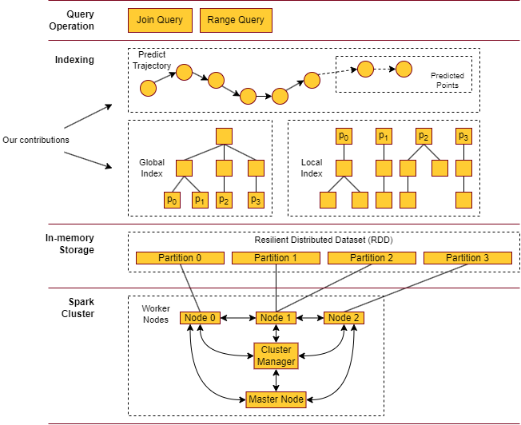

Trajectory analysis has grown significantly with the rapid expansion of GPS-enabled tracking infrastructure. Massive real-time streaming spatiotemporal datasets provide critical foundational value to urban planning, mapping applications, and transport routing services. These modern frameworks rely heavily on execution patterns like range queries and join queries.
To resolve traditional latency bottlenecks when handling massive stream inputs, this thesis introduces PIMMLI (Predictive In-memory Multi-Level Indexing), a novel algorithm designed to improve indexing scalability.
Benchmarked systematically against the industry state-of-the-art DITA algorithm across multiple hyperparameter variants, rigorous evaluations on real-world tracking streams demonstrate that PIMMLI delivers comparable baseline performance for standard range queries, generates at least a 5.8% efficiency gain on join queries, and accelerates average data ingestion times with a 28.10% optimization in overall trajectory indexing throughput.